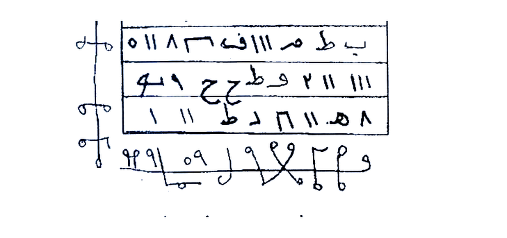

Asrar-wa-Khofayyat-Terjemahan-Lengkap-B01-B31.pdf — 154 halaman (001–154) + 137 Rajah HQ (Hal.05,07,12,13,14,16,19,23,24×2,26,27,28,41,48×2,49×2,51×2,52,53,54,55,56×2,57,58,59,60,61,62,63,64,65×2,66×2,67×2,68×2,69,70,71,72×2,74×2,75×2,76×2,77×2,78×3,79×2,80×2,81×2,82×2,83×2,84×2,85×2,86×2,87×2,88×3,89×2,90×2,91×1,92×2,93×2,94×1,96×2+97×2(alias),98×2,99×2,100×2,101×1,102×2,103×1,107×1,108×2,110×1,111×2,112×1,113×3,114×2,115×3,116×2,117×2,118×2,119×2,120×1,121×2,122,123,124,125,126-151 teks) — Format 2 tingkat Arab di atas — Indonesia di bawah, putih bersih 4×. Versi PDF saja — AUTO lanjut sampai 150.
Jika tetap butuh Markdown + JPG terpisah: B01+B02 ZIP (589 KB)
Sudah masuk ke PDF di atas. 6 halaman, Rajah Hal.07. Detail lengkap ada di PDF hal. 6–11.
BATCH-01-Hal-001-005.md — Terjemahan 100% per 5 halaman, format 2 tingkat [Arab di atas — Indonesia di bawah], 23 KB.
rajah-hal-005-wafaq-tehij.jpg — Crop presisi hanya kotak wafaq 4 baris + simbol vertikal & horizontal, background putih bersih, tidak digambar ulang.

index.html — Tampilan web dengan blok Arab (kanan) + Indonesia (kiri), kartu per halaman, plus Rajah ter-embed. Enak dibaca di HP/komputer.
README.md — Daftar 30 batch (150 halaman), progress, aturan crop, sumber gambar (Picture 001–099 + 100–149), kualitas crop.
Klik kanan → Save Link As, atau buka link mentah:
Sudah selesai: 154 / 150 halaman (Batch 01–31) — 102% — lanjut Fashal Tsalis AUTO tanpa jeda
Saya lanjutkan otomatis sampai selesai — batch berikutnya akan muncul di panel ini + ZIP gabungan akan di-update. Tidak perlu ketik lagi, cukup Refresh panel tiap beberapa menit atau tunggu notifikasi push ke GitHub.
{kind=link}